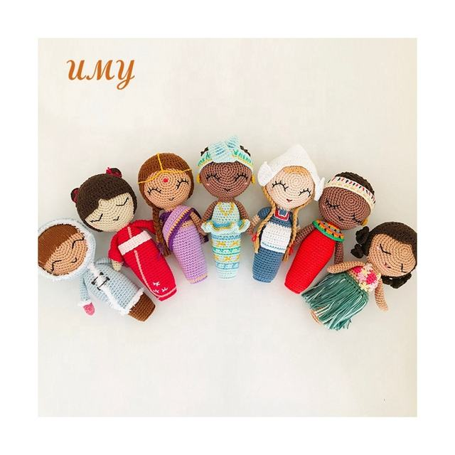

For Toy Brands · Museums · Gift Retail
Custom Amigurumi Manufacturer
Turn sketches, mascots and licensed character concepts into hand-crocheted samples and scalable retail collections.
MOQ200 pieces per design
PrototypeFrom 7 days
DevelopmentShape, yarn and facial details
BrandingLabels, cards and packaging
From Character Brief to Bulk Production
Character Development
We translate front, side and detail references into crochet proportions and stitch specifications.
Sample Approval
Review colors, facial expression, dimensions and accessories before production begins.
Consistent QC
Approved samples become the production standard for stitch density, filling and finishing.
Suitable for Original and Licensed Collections
We support animal dolls, mascots, educational characters, museum gifts, nursery decor and seasonal amigurumi. Buyers are responsible for confirming rights to licensed designs.